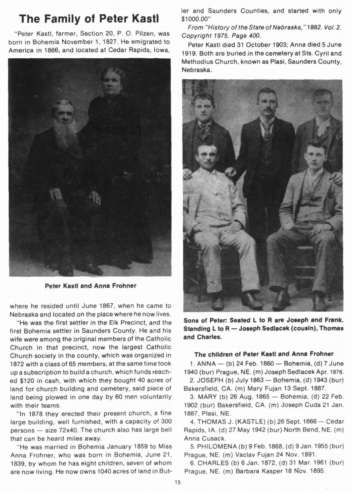
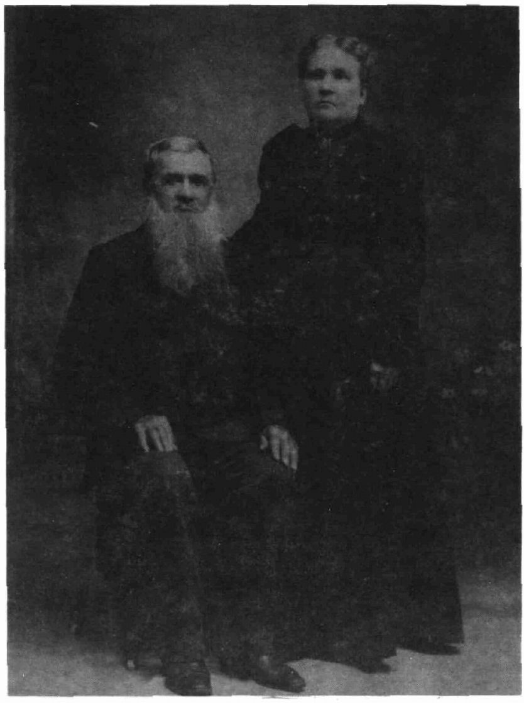

The book · The Family of Peter Kastl
Page 15 The Family of Peter Kastl


Transcription
The Family of Peter Kastl
"Peter Kastl, farmer, Section 20, P. O. Pilzen, was born in Bohemia November 1, 1827. He emigrated to America in 1866, and located at Cedar Rapids, Iowa,


where he resided until June 1867, when he came to Nebraska and located on the place where he now lives.
"He was the first settler in the Elk Precinct, and the first Bohemia settler in Saunders County. He and his wife were among the original members of the Catholic Church in that precinct, now the largest Catholic Church society in the county, which was organized in 1872 with a class of 65 members, at the same time took up a subscription to build a church, which funds reached $120 in cash, with which they bought 40 acres of land for church building and cemetery, said piece of land being plowed in one day by 60 men voluntarily with their teams.
"In 1878 they erected their present church, a fine large building, well furnished, with a capacity of 300 persons — size 72x40. The church also has large bell that can be heard miles away.
"He was married in Bohemia January 1859 to Miss Anna Frohner, who was born in Bohemia, June 21, 1839, by whom he has eight children, seven of whom are now living. He now owns 1040 acres of land in Butler and Saunders Counties, and started with only $1000.00"
From "History of the State of Nebraska," 1882. Vol. 2. Copyright 1975. Page 400.
Peter Kastl died 31 October 1903; Anna died 5 June 1919. Both are buried in the cemetery at Sts. Cyril and Methodius Church, known as Plasi, Saunders County, Nebraska.

The children of Peter Kastl and Anna Frohner
- ANNA — (b) 24 Feb. 1860 — Bohemia, (d) 7 June 1940 (bur) Prague, NE. (m) Joseph Sedlacek Apr. 1876.
- JOSEPH (b) July 1863 — Bohemia, (d) 1943 (bur) Bakersfield, CA. (m) Mary Fujan 13 Sept. 1887.
- MARY (b) 26 Aug. 1865 — Bohemia, (d) 22 Feb. 1902 (bur) Bakersfield, CA. (m) Joseph Cuda 21 Jan. 1887, Plasi, NE.
- THOMAS J. (KASTLE) (b) 26 Sept. 1866 — Cedar Rapids, IA. (d) 27 May 1942 (bur) North Bend, NE. (m) Anna Cusack.
- PHILOMENA (b) 9 Feb. 1868, (d) 9 Jan. 1955 (bur) Prague, NE. (m) Vaclav Fujan 24 Nov. 1891.
- CHARLES (b) 6 Jan. 1872, (d) 31 Mar. 1961 (bur) Prague, NE. (m) Barbara Kasper 18 Nov. 1895.
People from the line of descent on this page
- Peter Kastl 1827/1828–1903
Transcriber’s notes
Start of chapter 'The Family of Peter Kastl'. The quoted biography (from 'History of the State of Nebraska', 1882) runs down the left column, interrupted by the first photo, and finishes at the top of the right column ('in But-/ler'). The child list (6 of the 8 children) continues on the next page. 'Apr. 1876' in child 1 is set in slightly smaller type. Print wording kept: 'first Bohemia settler', 'has large bell'.